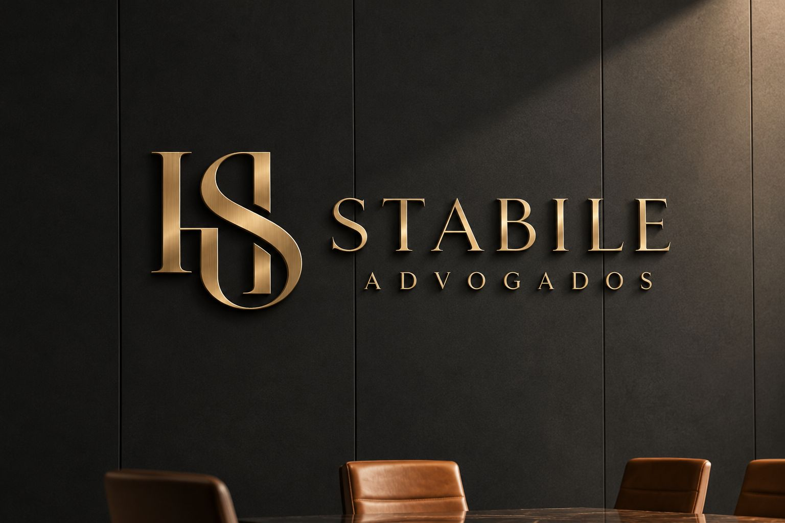
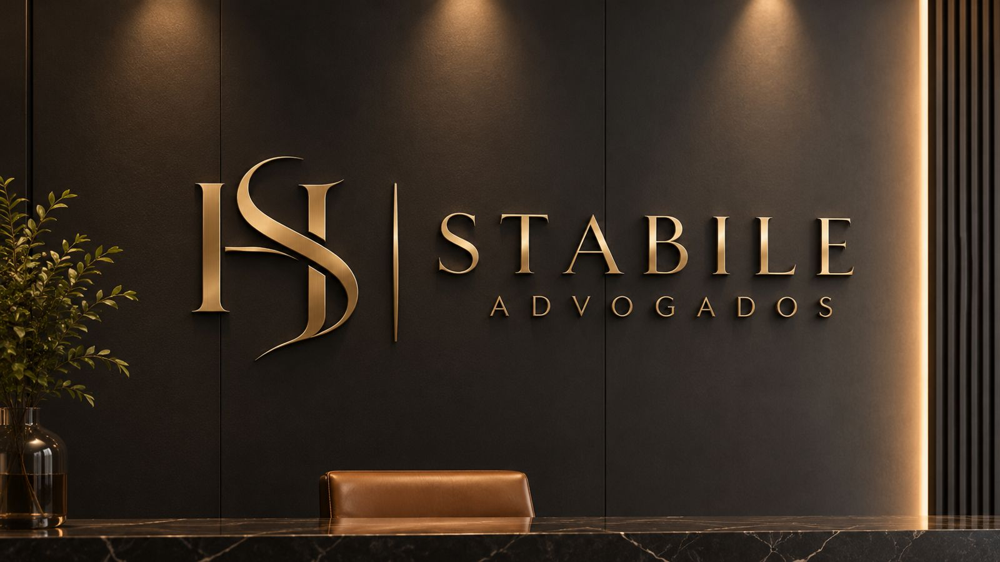
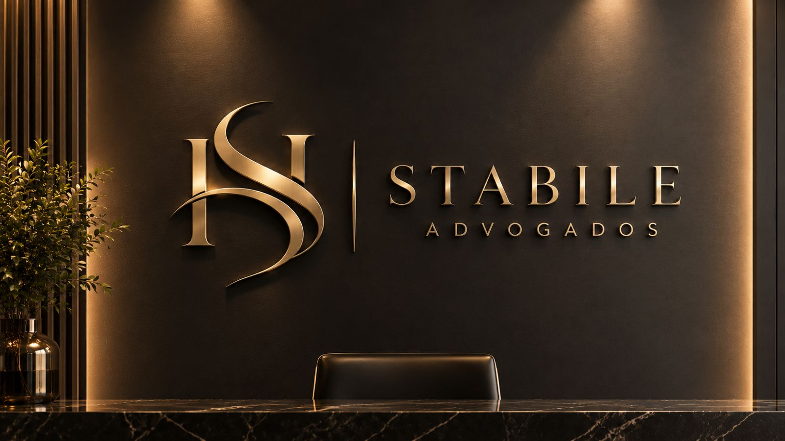
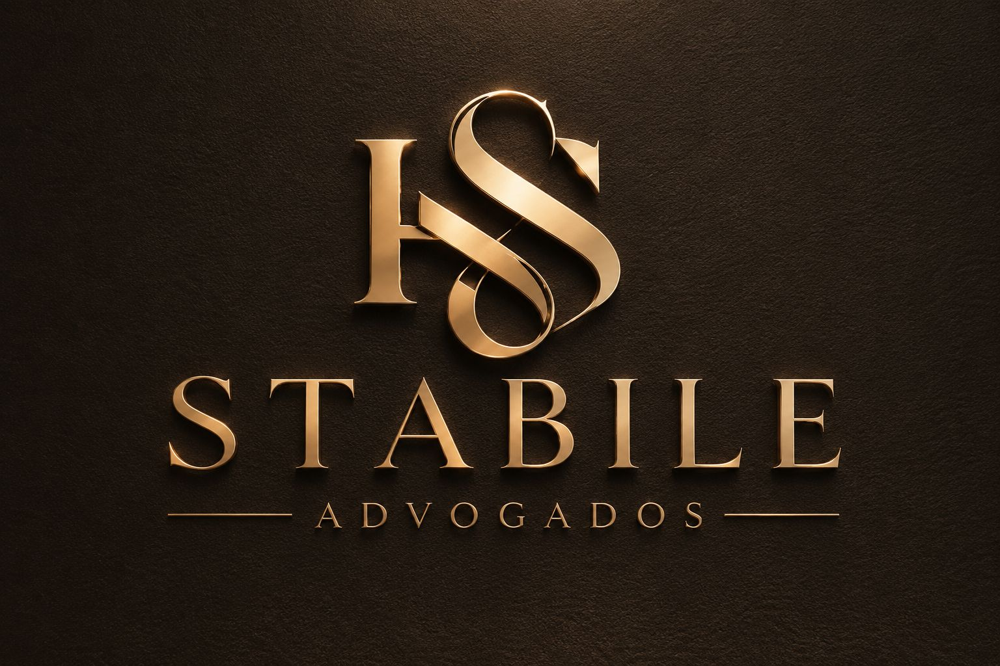
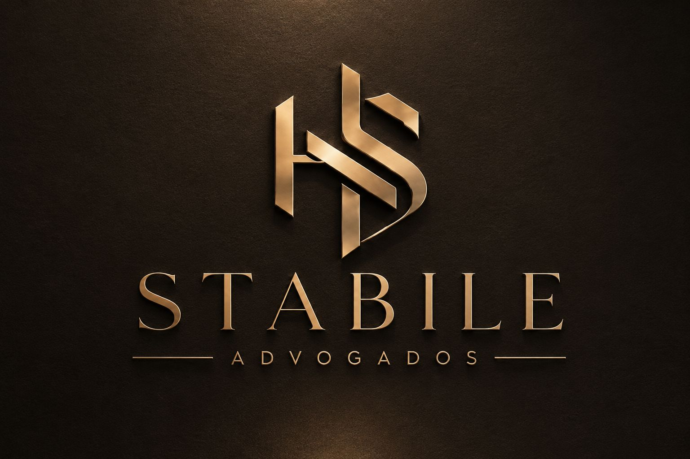

 Proposta 01Monograma entrelaçadoO H e o S se apoiam um no outro, como um selo. Leitura clássica e direta.Ver manual de aplicação →
 Proposta 02Monograma com fileteTraço fino e ascendente no S, separado do nome por um filete vertical. Mais leve e editorial.Ver manual de aplicação →
Proposta 03Monograma em movimentoO S atravessa o H em uma curva longa. Transmite fluidez e continuidade.Ver manual de aplicação →
 Proposta 04Monograma caligráficoCurvas mais abertas e um gesto caligráfico na base. Elegante e pessoal.Ver manual de aplicação →
 Proposta 05Selo empilhadoMonograma sobre o nome, com filetes laterais. Funciona bem em fachada e papelaria.Ver manual de aplicação →
 Proposta 06Monograma geométricoCortes retos e diagonais, mais contemporâneo. Forte em tamanhos pequenos.Ver manual de aplicação →